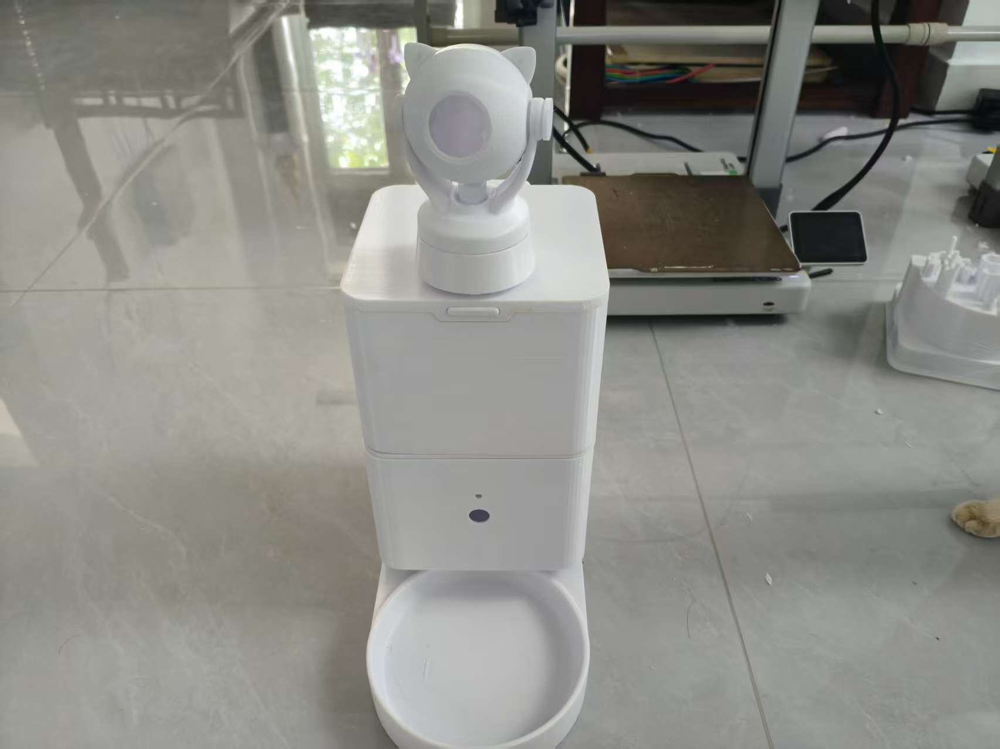

MECHANICAL / SMART HARDWARE
猫粮投喂器
从 SolidWorks 2026 模型到实物样机，完成储粮、两级带轮传动、蜗杆齿轮下料、接粮和摄像头观察模块的整合。
中国科学院大学流体力学专业在读博士，还在努力学习中。

从 SolidWorks 2026 模型到实物样机，完成储粮、两级带轮传动、蜗杆齿轮下料、接粮和摄像头观察模块的整合。
新的想法还在整理、试错和学习中。项目会在形成更清晰的方向后继续更新。
在读博士，继续学习、研究，也继续尝试把想法做成真实的东西。
完成模型整理、实物装配和项目资料归档，建立个人主页展示项目过程。
保持学习和开发，等下一个项目准备好再和大家见面。
如果你对流体力学、机械结构或这个投喂器项目感兴趣，可以给我发邮件。也欢迎各位老师、同学和朋友提出建议。